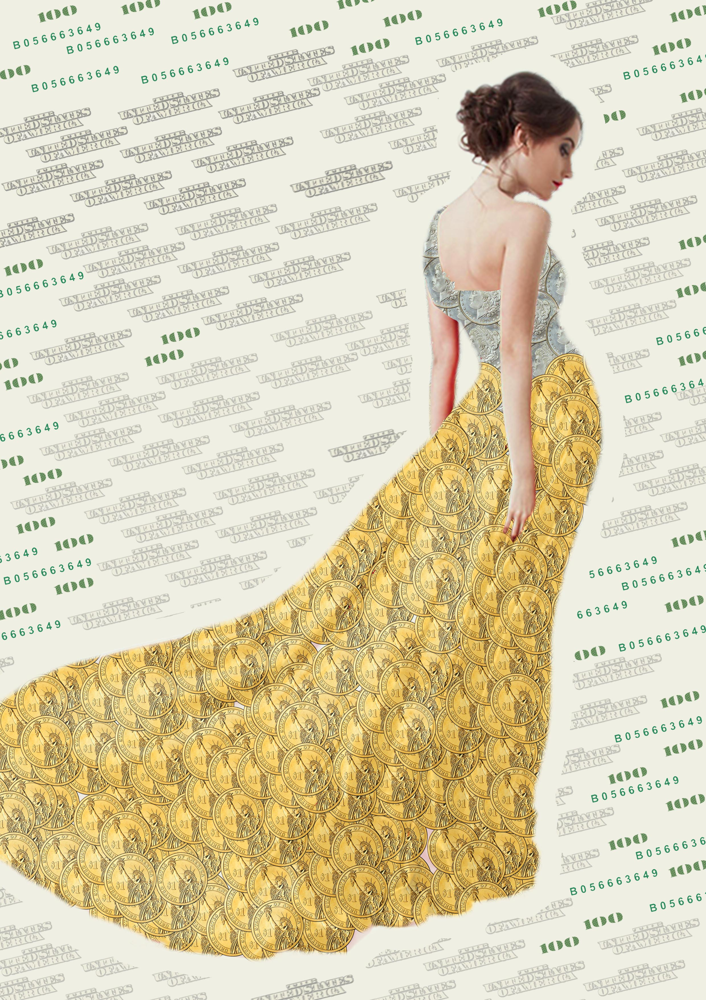
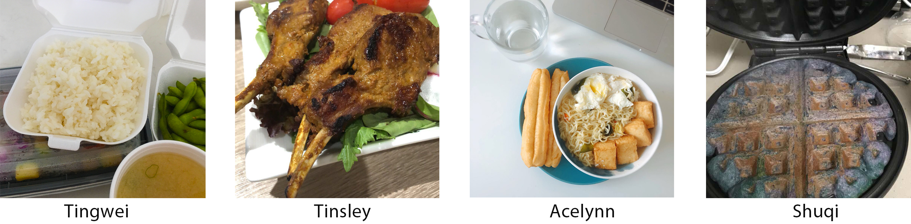
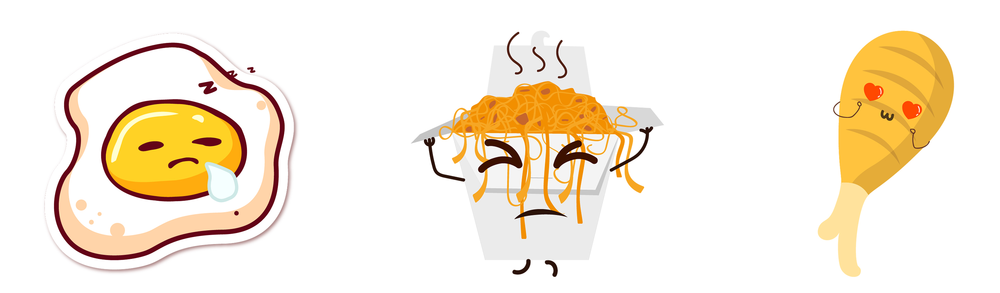
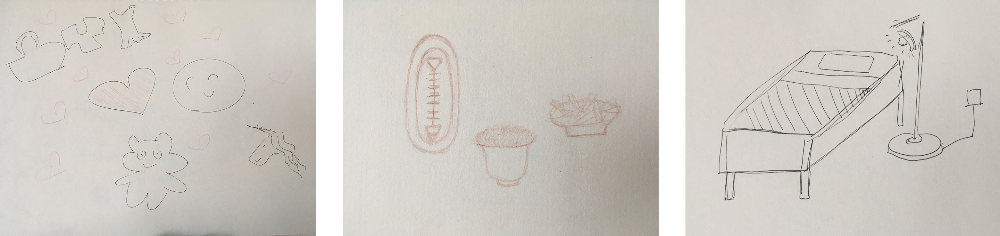
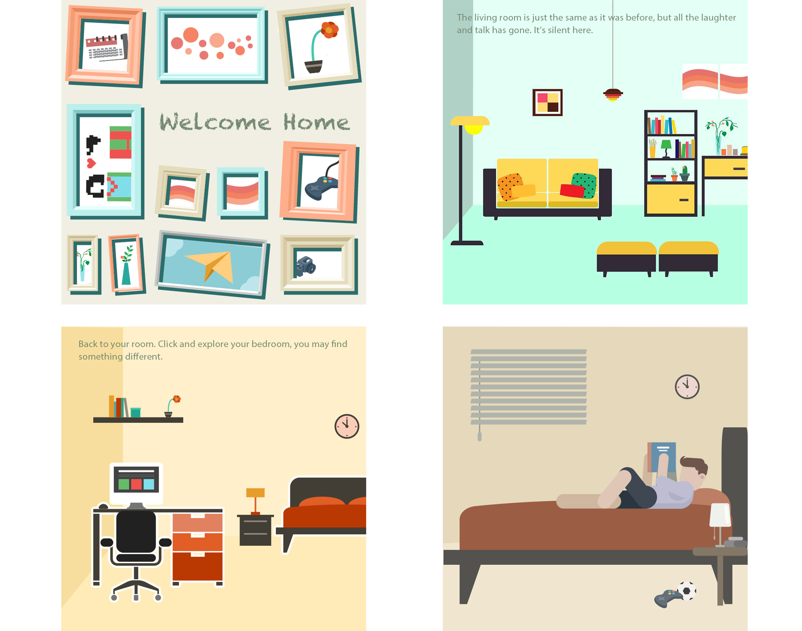
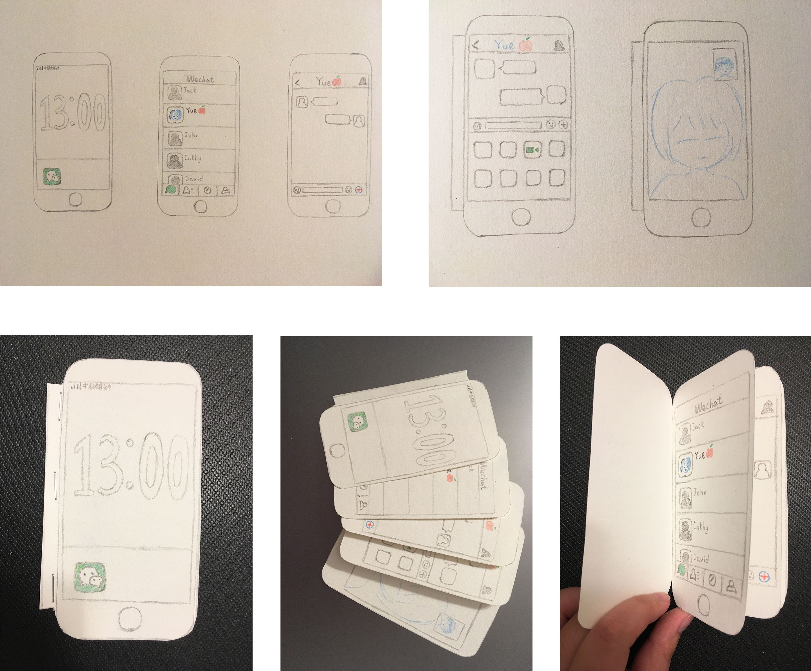

For this project, I need to finish one project in one day, and each day's concept is inspired by the previous one. It's a good way to keep thinking, come up with new ideas and turn inspiration into work.
On the first day of this project, I found out that people always love those luxurious things like long dresses and jewels, or buy many different kinds of makeups while we seldom use them. Most people do not really need them, they buy them only to compare with others and satisfy their desire, which can be a waste of money. I used this concept to make a poster, using coin and dollar pattern on women's long dress to show people's desire.
On the second day, I decided to do something about food and life because girls caring about their appearance and makeups are always considering keeping fit and they could never enjoy food. I was a beginner for cooking, and I was new here in New York City. I felt like the process of learning cooking and the city was sometimes similar, full of problems, but surprises along the way. So I wondered how people felt about their life and how would they use food to express it.
I did some user tests, and images above show four people's recent life condition, which represents anxiety, happiness, boredom and surprise. I then made memes that shows our daily emotion based on the food people chose and the feelings they expressed to me.
For the third project, I wanted to do some research on home as the taste and smell of food could always arouse our memory of home. I wanted to know how people think of home and what they would recall when talking about home. So I did research on the first word people would think when they are asked about home and draw the image based on what they thought.
Based on these images, I came up with the idea to make a game that includes people's thought and memory of home because everyone has so much precious memory about home and the definition of home was so different. I made a game called "Welcome Home", in which people would explore the house they have left for a long time and let those tiny things arouse their memory of happy and unhappy things happened before.
On the fourth day, the project before reminded me of my grandma. She could not blend in with the technical world that well, things like smart phone and chatting app are too complicated for her. But on the other hand, she really wanted to have video chat with me since I was studying abroad. That's why I decided to make a instruction book for her to teach her how to use them.
I chose an app called "Wechat", which was popular in China, and drew the steps on how to have a video chat with others. The instruction was simple to read, with buttons that are going to use colored and others in black and white to attract people's attention on what to do next.
The last project was based on paper and handwork. I was inspired from the last project, which I used paper to make instructions and solve my grandma's problem. I really wanted to do that for myself too. One of my problems in life was that I didn't have a bedside lamp, so when I got up at night, I would always knock into my bedside table and hurt myself. However, I didn't really need a bright lamp as I seldom read or write on bed. So I decided to make a paper night lamp that could use small lights and have slight light for me. I chose a scene from Harry Potter and used different kinds of paper to let the pattern shadow on the surface of the lamp.